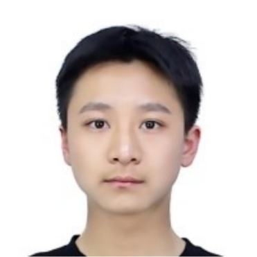

杨金波
求职意向：平面设计 / 新媒体视觉（拍摄 · 剪辑 · 账号运营）

个人优势
- 平面设计：VI 手册、画册、海报、易拉宝、详情页、PPT、易企秀 H5 均可独立完成；熟练使用 PS / AI / CDR，熟悉印刷打样与色彩校对，设计稿可直接落地。
- 拍摄剪辑：可独立完成活动、会议、人像，掌握布光与现场抓拍，不依赖外部摄影资源，活动素材当日即可回传。熟练使用剪映，可完成卡点、字幕、口播与封面制作，具备从拍摄到成片的完整交付能力。
- 平台与账号运营：参与抖音、视频号账号运营，覆盖选题、脚本、拍摄、剪辑、发布与数据复盘，熟悉平台发布规范、封面规格与内容节奏。
工作经历
杭州堃玉科技合伙企业（有限合伙）
平面设计
2026.06 — 2026.10
- 负责品牌推广视觉设计，覆盖主图详情、活动海报、新媒体配图与宣传短片，独立完成需求到成片的全流程。
- 配合运营制定内容排期，按节点提前备料，保障视觉物料按期上线。
- 将 AI 工具引入日常设计流程，用于草图、扩图与文案初稿，提升方案产出效率。
- 负责户外广告、品牌宣传手册等线下物料设计，并支持线下课程的视觉配套与现场执行。
江苏创华咨询集团有限公司
平面设计
2023.12 — 2026.04
- 独立承担公司全品类视觉设计：VI 维护、海报易拉宝、名片、公众号与抖音封面、易企秀、PPT、课程详情页。
- 负责每月 3 场线下课与招商会：酒店对接、宣传图与报名页设计、现场拍摄，次日完成回顾图文与短视频。
- 抖音、视频号账号运营：负责内容拍摄、剪辑与封面设计，确定选题与发布节奏，依据数据调整内容方向。
- 推进线下落地物料，拆解需求、把控终稿与印刷打样，保障物料落地质量。
江苏金太阳纺织科技股份有限公司
印花设计专员
2023.06 — 2023.12
- 负责家纺印花纹样设计，主攻儿童、几何风格，产出四方 / 二方连续图案。
- 使用 PS、AI 完成临摹、描线、分色上色，借助 AI 工具获取设计灵感。
- 1~2 天完成一款纹样，多款图案直接对接客户，参与选品会，跟进图案打样落地。
- 配合团队完成图案构思与排版优化，2 款原创作品入选公司选稿，协同作品入选公司专版。
教育经历
- 南通职业大学 ｜ 大专 ｜ 视觉传达设计 ｜ 2021—2024
- 南京艺术学院 ｜ 本科（自考）｜ 视觉传达设计 ｜ 2024—2026
专业排名前 10%，主修版式设计、品牌视觉、插画设计等核心课程；曾获大广赛、红旗渠摄影大赛等专业赛事奖项，具备扎实的视觉审美基础。
技能工具
PS · AI · CDR · 剪映 · 易企秀 · PPT ｜ 拍摄：手机 / 相机、基础布光、分镜脚本 ｜ AI 工具：出图、扩图、文案初稿